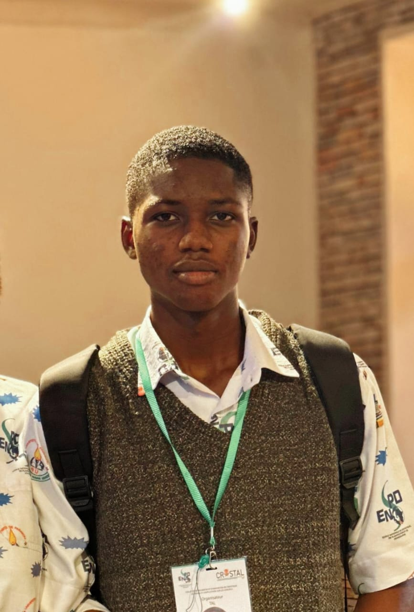

Développeur Full-Stack
Je construis des expériences web modernes,
rapides et accessibles.

Étudiant en statistique appliquée à l’ENSPD de Parakou, spécialisé en analyse de données et modélisation, compétent en R et Python, je m’intéresse à l’exploration de données et à la prise de décision basée sur les données. Je développe des projets mêlant data et technologie et suis ouvert à des opportunités en data science et développement.
Mon approche : du code propre, des interfaces performantes, et une attention particulière à l'expérience utilisateur, une interprétation fluide et organisée des résultats d'analyses.
En dehors du code, je contribue à des projets open source.
Étude statistique sur l'usage des TIC et leurs implications dans le quotidien universitaire
Conception et développement de ce portfolio personnel from scratch en HTML/CSS pur, sans framework. Design dark mode, animations CSS et effet typewriter en JavaScript vanilla.
Un nouveau projet web est en cours de développement. Création de site web pour aider les étudiants à retrouver les bourses disponibles pour leur filière.